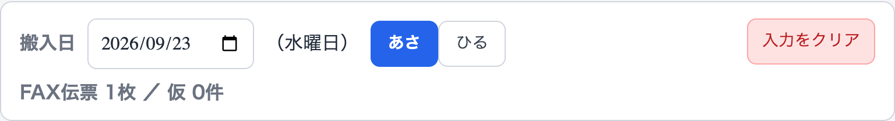
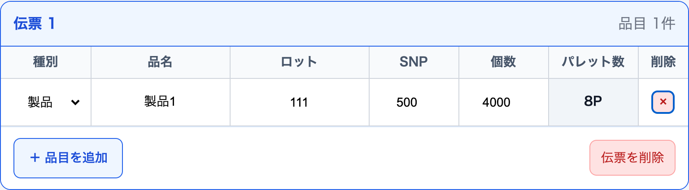

パレット配置アプリ 操作マニュアル入力 → 配置編集 → 配置図
3. 入力
FAXの内容と予定表のSNPを入力し、枚数を確認します。
3.1 その日の入力を始める
①「あさ／ひる」を確認し、前回分があれば「入力をクリア」を押します。
② 搬入日と、作成する「あさ／ひる」を確認します。搬入日は共通です。

クリアされるのは選択中の側だけです。朝・昼の両方を作る日は、それぞれ確認します。
3.2 FAXと予定表を見て入力する
デモ用FAX① ／ 発送内容架空の発送伝票から必要項目を抜粋
予定表 ／ SNPの確認SNPは予定表と照合します。
③「＋ FAX伝票を追加」を押し、種別・品名・ロット・SNP・個数を入力します。

④ 同じFAXの別品目・ロットは「＋ 品目を追加」。次のFAXは別の伝票として追加します。
3.3 SNP・パレット数・FAX枚数を確認する
同じ品目でもSNPが異なる場合があります。自動入力された場合も、予定表と照合してください。
入力確認は「半」表示がおすすめです。
設定 → 表示設定 → 入力画面での端数を「半」で表示：オン
SNP 500・個数2,750なら 5P 半
オフでは「6P」。どちらも満載5枚＋端数1枚で、場所は6枚分です。
画面上部のFAX枚数 ＝ 手元の実物の枚数
実物1枚につき1伝票として入力し、入力漏れを確認します。仮伝票は別に数えられます。